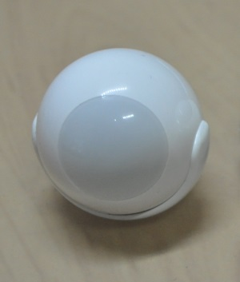
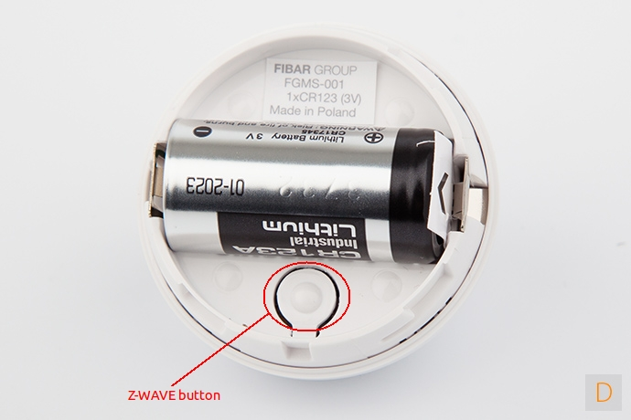

Fibaro Motion Sensor¶
Fibaro Z-Wave Motion Sensor - FGMS-001¶

Specification¶
- Operating frequency: 869/908/921 MHz
- Operating range: up to 50m outdoor and 30m indoor
- Operating temperature: 0-40 oC
- Measure temperature range: -20 ~ 100 oC
- Measure light range: 0 ~ 32000 LUX
- Detection angle: 45 degrees
- Battery: 3.6 VDC CR123A
Inclusion/Exclusion to/from a network¶

- Put controller to Inclusion/Exclusion mode
- Press program button 3 times quickly. Device will be included/excluded to/from zwave network.
Configuration description¶
- Motion sensor’s sensity
- Parameter: 1 (0x01)
- Size: 1 byte
- Value: 0x08 ~ 0xFF
- Default: 0x01
- Motion sensor blind time
Parameter: 2 (0x02)
Size: 1 byte
- Value:
- valid value: 0x00 ~ 0x0F
- fomular: time = 0.5 * (value+1)
Default: 0x0F
- PIR sensor “PULL COUNTER”
Parameter: 3 (0x03)
Size: 1 byte
- Value:
- valid value: 0x00 ~ 0x03
- fomular: pules = value + 1
Default: 0x01
- PIR sensor’s “WINDOW TIME”
Parameter: 4 (0x04)
Size: 1 byte
- Value:
- valid value: 0x00 ~ 0x03
- fomular: times = 4 * (setting value + 1)
Default: 0x02
- Motion alarm cancellation delay
Parameter: 6 (0x06)
Size: 2 bytes
- Value:
- valid value: 1 ~ 65535
Default: 0x001E
- PIR sensor operating mode
Parameter: 8 (0x08)
Size: 1 byte
- Value:
- 0x00: PIR always active
- 0x01: PIR active during day only
- 0x02: PIR active during night only
Default: 0x00
- Night or Day.
Parameter: 9 (0x08)
Size: 2 bytes
- Value:
- Valid value: 1 ~ 65535
- Unit is LUX
Default: 0x00C8
- Trigger to associated devices
Parameter: 12 (0x0C)
Size: 1 byte
- Value:
- 0x00: Basic ON and basic OFF are sent
- 0x01: Only basic ON is sent
- 0x02: Only basic OFF is sent
Default: 0x00
- Trigger ON command format
Parameter: 14 (0x0E)
Size: 1 byte
- Value:
- 0: Turn off associated devices
- 1 ~ 99: Turn on associated devices (Binary devices), Turn on associated devices with dimmer value
- 255: Turn on associated devices (Binary devices), Turn on associated devices with last memorized dimmer value
Default: 0x00
- Trigger OFF command format
Parameter: 16 (0x10)
Size: 1 byte
- Value:
- 0: Turn off associated devices
- 1 ~ 99: Turn on associated devices (Binary devices), Turn on associated devices with dimmer value
- 255: Turn on associated devices (Binary devices), Turn on associated devices with last memorized dimmer value
Default: 0x00
- Tamper sensity
Parameter: 20 (0x14)
Size: 1 byte
- Value:
- Valid value: 0 ~ 122
- Formula: setting val * 0,016g,
- Zero means disable this feature.
Default: 0x0F (0,224g)
- Tamper alarm cancellation delay
Parameter: 22 (0x16)
Size: 2 bytes
- Value:
- Valid value: 1 ~ 65535
- Unit is second
Default: 0x1E
- Tamper alarm broadcast mode
Parameter: 26 (0x1A)
Size: 1 byte
- Value:
- 0: Disable broadcast mode
- 1: Enable broadcast mode
Default: 0x00
- Illumination report threshold
Parameter: 40 (0x28)
Size: 2 bytes
- Value:
- 0x0000: disable this feature
- Valid value: 0x01 ~ 0xFFFF
- Unit is LUX
Default: 0x00C8
- Illumination report interval
Parameter: 42 (0x2A)
Size: 2 bytes
- Value:
- 0x0000: disable this feature
- Valid value: 0x01 ~ 0xFFFF
- Unit is second
Default: 0x0000
- Temperature change report threshold
Parameter: 60 (0x3C)
Size: 1 byte
- Value:
- 0x00: disable this feature
- Valid value: 0x01 ~ 0xFF
- Unit is celsius
- Setting number contains 1 decimal point. Setting value approximately 0.1 ~ 25.5 oC
Default: 0x000A
- Temperature measuring interval
Parameter: 62 (0x3E)
Size: 2 bytes
- Value:
- 0x00: Temperature is not measured
- Valid value: 0x0001 ~ 0xFFFF
- Unit is celsius
- Setting number contains 1 decimal point. Setting value approximately 0.1 ~ 25.5 oC
Default: 0x0384
- Temperature report interval
Parameter: 64 (0x40)
Size: 2 bytes
- Value:
- 0x00: report is not sent
- Valid value: 0x0001 ~ 0xFFFF
- Unit is second
Default: 0x0000
- Temperature offset
Parameter: 66 (0x42)
Size: 2 bytes
- Value:
- 0x0000 ~ 0x0064: appropriated to 0oC to 100oC
- 0x0000 ~ 0xFFFF: appropriated to 0oC to 100oC
- Valid value: 0x0001 ~ 0xFFFF
- Unit is second
Default: 0x0000
- LED indicator setting
Parameter: 80 (0x50)
Size: 1 byte
- Value:
- 0: LED inactive.
- 1: LED colour depends on the temperature. Set by #86 and #87.
- 2: Flashlight mode - LED glows in white for 10 seconds.
- 3: White.
- 4: Red.
- 5: Green.
- 6: Blue.
- 7: Yellow.
- 8: Cyan.
- 9: Magenta.
- 10: LED colour depends on the temperature. Set by parameters #86 and #87.
- 11: Flashlight mode - LED glows in white through 10 seconds. Each next detected motion extends the glowing by next 10 seconds.
- 12: White.
- 13: Red.
- 14: Green.
- 15: Blue.
- 16: Yellow.
- 17: Cyan
- 18: Magenta
- 19: LED colour depends on the temperature. Set by parameters #86 and #87.
- 20: White
- 21: Red
- 22: Green
- 23: Blue
- 24: Yellow
- 25: Cyan
- 26: Magenta
- Values from 1 to 9 = single long blink at the moment of reporting motion. No other motion will be indicated until alarm is cancelled.
- Values from 10 to 18 = single long blink at the moment of reporting motion and one short blink each time the motion is detected again.
- Values from 19 to 26 = single long blink at the moment of reporting motion and two short blinks each time the motion is detected again.
Default: 0x0A
- LED brightness
Parameter: 81 (0x51)
Size: 1 byte
- Value:
- 0x00: brightness detemined by parameter #82,#83
- 0x01 ~ 0x63: percentage
Default: 0x32
- Ambient illumination level below which LED brightness is set to 1% (#82)
Parameter: 82 (0x52)
Size: 2 bytes
- Value:
- Valid value: 0x00 ~ value setting #83
Default: 0x64
- Ambient illumination level below which LED brightness is set to 100% (#83)
Parameter: 83 (0x53)
Size: 2 bytes
- Value:
- Valid value: value in #82 setting ~ 0xFFFF
Default: 0x03E8
- Minimum temperature resulting in BLUE led illumination (#86)
Parameter: 86 (0x56)
Size: 1 byte
- Value:
- Valid value: 0 ~ value in #87
Default: 0x12
- Maximum temperature resulting in RED led illumination (#87)
Parameter: 87 (0x57)
Size: 1 byte
- Value:
- Valid value: value in #86 ~ 0xFF
Default: 0x1C
- LED indicating tamper alarm
Parameter: 89 (0x59)
Size: 1 byte
- Value:
- 0x00 - LED does not indicate tamper alarm.
- 0x01 - LED indicates tamper alarm
Default: 0x01